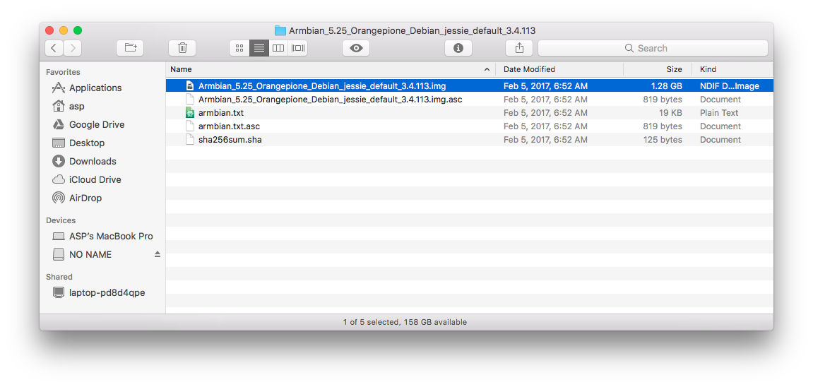

Small Scale, Big Data
Hadoop is an open-source distributed computing framework from the Apache Software Foundation. It is primarily aimed at Big Data analytics and has become the de-facto standard for Distributed analytics. It runs on Linux, and (lucky for us students of data) the Orange Pi One is a very affordable machine to learn about distributed computing, albeit with very limited resources.
So let’s set up a fully distributed, physical Hadoop 2 cluster with single-board Linux computers! I will be using two Orange Pi One boards. By the end of this journal, we will have a ethernet connected Hadoop 2 cluster of two single-board computers. This setup will not be powerful enough for production use, but it will demonstrate a simple implementation of the Hadoop 2 ecosystem for learning purposes.
Contents
- Materials
- Orange Pi Setup
2.1. Install the Operating System
2.2. Operate the Operating System - Hadoop 2.7.3
3.1. Hadoop 2 Architecture
3.2. Install Oracle Java
3.3. Create Hadoop user
3.4. Install Hadoop 2.7.3
3.5. Connect Hadoop Cluster
3.6. Hadoop Configuration
3.7. Create Hadoop Nodes
3.8. Start Hadoop
3.9. Test Hadoop - Troubleshooting Hadoop
4.1. Ensure Hostnames Working Properly
4.2. Check the Java version
4.3. Check Hostnames
4.4. SSH Access
4.5. Hadoop Install Verification
4.6. HDFSfsck
4.7. Reformat HDFS
4.8. Hadoop Configuration
4.9. Word Count Test
4.10. Calculate π Test
4.11. Optimize Configuration
4.12. Test Again - Project Discussion
5.1. Hadoop Application Failure Analysis
5.2. Future Work
5.3. Conclusion
Materials
I am using the following items to create the cluster:
- 2 Orange Pi Ones
- For each single-board computer
- Sandisk Ultra 16 GB Class 10 micro SD card (Amazon) (Speed Ratings Info)
- 5V 2A USB Power supply
- USB-DC barrel plug cable (Amazon)
- Network Interface
- Ethernet switch and CAT5 cable Note: USB WiFi Dongles could work, but are less reliable
- Display and HDMI-DVI cable
Orange Pi Setup
Install the Operating System
I purchased 2 boards from AliExpress.com, along with a Sandisk Ultra 16 GB Class 10 micro SD card from Amazon for each.

Each Orange Pi One requires a 5V 2A power supply with a DC barrel plug (4.0mm/1.7mm - center positive). I used a USB-DC barrel plug cable from Amazon so I could use a USB power supply that I had lying around the house.

SD Card Integrity
First, we need to ensure the integrity of the SD cards.
Many scam artists try to market small flash disks as large ones by changing the appearance of the disk. We will use a software test to verify the size of the disk we have. I am using F3 by Digirati (GPL v3). It runs on Windows, OS X, Linux, and other operating systems. The website includes a very straightforward instructions regarding it’s use.
(Note: I am using MacOS Sierra for the following commands, so if you are using a non-Unix-based OS, note that your commands will be different.)
Download and unzip the program, then compile it for your system.
$ cd f3-6.0
$ ls
LICENSE f3fix.c f3write.h2w libutils.c version.h
Makefile f3probe.c libdevs.c libutils.h
README.md f3read.1 libdevs.h log-f3wr
changelog f3read.c libprobe.c utils.c
f3brew.c f3write.c libprobe.h utils.h
$ make
cc -std=c99 -Wall -Wextra -pedantic -MMD -ggdb -c -o utils.o utils.c
cc -std=c99 -Wall -Wextra -pedantic -MMD -ggdb -c -o f3write.o f3write.c
cc -o f3write utils.o f3write.o -lm
cc -std=c99 -Wall -Wextra -pedantic -MMD -ggdb -c -o f3read.o f3read.c
cc -o f3read utils.o f3read.o
F3 uses two commands to verify the flash memory: f3write and f3read. The f3write command writes blocks of data to the disk, and f3read reads the data written. In our case, the output will show if the card’s claimed capacity matches its usable capacity.
Run f3write on the disk’s location in the file system. This can take a while. (Note: if you are using macOS as I am, the location is at /Volumes/your_disk by default.)
$ ./f3write /Volumes/"NO NAME"
Free space: 14.83 GB
Creating file 1.h2w ... OK!
Creating file 2.h2w ... OK!
Creating file 3.h2w ... OK!
Creating file 4.h2w ... OK!
Creating file 5.h2w ... OK!
Creating file 6.h2w ... OK!
Creating file 7.h2w ... OK!
Creating file 8.h2w ... OK!
Creating file 9.h2w ... OK!
Creating file 10.h2w ... OK!
Creating file 11.h2w ... OK!
Creating file 12.h2w ... OK!
Creating file 13.h2w ... OK!
Creating file 14.h2w ... OK!
Creating file 15.h2w ... OK!
Free space: 0.00 Byte
Average writing speed: 9.79 MB/s
Note: I received the following error when executing f3write the first time. I just retried the f3write command, and execution was successful. I am not sure what caused the error, and a quick Google search did not return any help. I will just keep the info in mind.
$ ./f3write /Volumes/"NO NAME" Free space: 14.83 GB Creating file 1.h2w ... 0.29% -- 10.00 MB/s f3write: Write to file /Volumes/NO NAME/1.h2w failed: Input/output error
And run f3read to verify the data written.
$ ./f3read /Volumes/"NO NAME"
SECTORS ok/corrupted/changed/overwritten
Validating file 1.h2w ... 2097152/ 0/ 0/ 0
Validating file 2.h2w ... 2097152/ 0/ 0/ 0
Validating file 3.h2w ... 2097152/ 0/ 0/ 0
Validating file 4.h2w ... 2097152/ 0/ 0/ 0
Validating file 5.h2w ... 2097152/ 0/ 0/ 0
Validating file 6.h2w ... 2097152/ 0/ 0/ 0
Validating file 7.h2w ... 2097152/ 0/ 0/ 0
Validating file 8.h2w ... 2097152/ 0/ 0/ 0
Validating file 9.h2w ... 2097152/ 0/ 0/ 0
Validating file 10.h2w ... 2097152/ 0/ 0/ 0
Validating file 11.h2w ... 2097152/ 0/ 0/ 0
Validating file 12.h2w ... 2097152/ 0/ 0/ 0
Validating file 13.h2w ... 2097152/ 0/ 0/ 0
Validating file 14.h2w ... 2097152/ 0/ 0/ 0
Validating file 15.h2w ... 1733888/ 0/ 0/ 0
Data OK: 14.83 GB (31094016 sectors)
Data LOST: 0.00 Byte (0 sectors)
Corrupted: 0.00 Byte (0 sectors)
Slightly changed: 0.00 Byte (0 sectors)
Overwritten: 0.00 Byte (0 sectors)
Average reading speed: 22.27 MB/s
Great! no files are listed in the ‘corrupted’ column above, so the microSD cards should be good.
If your disk shows files in the ‘corrupted’ category or a much smaller capacity than advertised, ask for your money back. See F3’s website for more specifics on the program’s use and functionality.
Flash the OS
The next step is to write the operating system for the orange pi to a microSD card, called “flashing” the card.
We will be installing the Armbian distribution of Debian Jessie. It is a solely CLI image, which means that it uses a text-based command-line interface. They host a Ubuntu Xenial image with CLI only and GUI desktop interface versions as well.
Shenzhen Xunlong CO., Limited, the makers of the Orange Pi, host their own OS images for the Orange Pi One, but they are the same images as for another model, the Orange Pi PC. I have read that the image is not fully supported by the hardware of the One, while Armbian’s image is customized for the One. See linux-sunxi for details.
Download and unzip the OS image. I used The Unarchiver for mac to unzip the .7z file. The OS image file is highlighted.  Armbian offers a GPG signature for authentication of the OS image download, if you want to check that out. The process is quite involved however.
We will be using Etcher to flash the microSD card. It is a simple interface available for many OSes.

Just choose the Armbian image and the microSD card. The card was auto selected for me. My Armbian image was named as follows. Ensure that you have the correct filename.
Armbian_5.25_Orangepione_Debian_jessie_default_3.4.113
Etcher gave a success message, so we can now insert the microSD card into the Orange Pi and begin the first boot.

Now, just load the microSD into the Orange Pi board, connect a USB keyboard and display, and connect power. I’m using a HDMI-DVI connection.
Problem!
At this point, we should see a red power light and the Pi should boot up. However, I see no lights at all. This is a problem!
After measuring some voltages with a multimeter, it seems that the issue is the USB-DC power cable. I can measure 5V from the power supply, but no voltage from the cable connector. I will get another cable and try to boot from the Armbian image again.
New Power Cables
Two new cables from Amazon (this one and this one) arrived today. I will try to boot the Armbian image again. I am skeptical that this will work, since it seems like a cable is the least likely piece of the computer system to fail.
Let’s connect the Orange Pi as above, and try to boot!
Boot Up
LIGHTS! It does seem as if the cable was bad. (I’ll try to get my money back.) I am getting a green light and blinking red light. The DVI monitor showed an error message and then a blank screen.
I wish I’d gotten a video here of the light sequence during the boot process, but I didn’t have the camera ready.
This all means the resolution coming from the Orange Pi is unusable by the monitor. This also means that I currently have no idea what is going on with the Orange Pi Boot process. A quick Google search didn’t turn up anything specific, so I will try to boot with another power supply.
The Orange Pi is extremely picky about the power supply. Even a supply marked 5V 2A will fail frequently. It seems that the voltage must be extremely stable over all amperages, and the amperage must not fall far below 2A at any time during operation. It seems that the best solution for the Orange Pi power supply is to buy the 5V 3A power supply from AliExpress. They have both US and European versions.
I use the Plugable 4-port USB Hub to power my Raspberry Pi with no issues, so I will give that a try as the power supply.

It works! I got a brief look at the boot process before the monitor went blank due to resolution issues (probably), and the green light went solid with occasional flashes (the light is on the lower right corner of the board, by the GPIO pins). The red light started solid and then went out.
Operate the Operating System
Now that the boot process has begun successfully, let’s login and configure the opartating system.
Login with Secure Shell (SSH)
Since the monitor is blank, it’s not helping us complete the initial boot process. Thankfully SSH is enabled by default on the Orange Pi! SSH is a method of remotely logging in to a Unix-based (e.g. Linux) operating system. SSH Wikipedia link.
Since the Orange Pi booted up while connected to the network, it received an IP Address by DHCP. I can check that at my router’s homepage.
(There are other methods to ascertain the IP address of the devices on your home network, like Fing for iOS and Android).
SSH into the Orange Pi One. The default password for root on Armbian is ‘1234’. Add the RSA fingerprint to the list of known hosts if asked. This registers the Orange Pi hardware with your computer.
$ ssh root@[ip_address] # Replace [ip_address] with the IP
# address of your Orange Pi
root@192.168.0.108 password: #1234
A nice login screen is displayed upon SSH connection.
___ ____ _ ___
/ _ \ _ __ __ _ _ __ __ _ ___ | _ \(_) / _ \ _ __ ___
| | | | '__/ _` | '_ \ / _` |/ _ \ | |_) | | | | | | '_ \ / _ \
| |_| | | | (_| | | | | (_| | __/ | __/| | | |_| | | | | __/
\___/|_| \__,_|_| |_|\__, |\___| |_| |_| \___/|_| |_|\___|
|___/
Welcome to ARMBIAN 5.25 stable Debian GNU/Linux 8 (jessie) 3.4.113-sun8i
System load: 0.01 Up time: 11 min
Memory usage: 10 % of 494Mb IP: 192.168.0.108
CPU temp: 39°C
Usage of /: 13% of 15G
Configure System
Now that we can boot the Orange Pi up, lets get the system configured for use.
Follow the initial boot prompts from Armbian, like changing the root password, making a new user account, and setting the display settings.
The h3disp program is provided to set the display settings.
root@orangepione:$ sudo h3disp
Usage: h3disp [-h/-H] -m [video mode] [-d] [-c [0-2]]
############################################################################
This is a tool to set the display resolution of your Orange
Pi by patching script.bin.
In case you use an HDMI-to-DVI converter please use the -d switch.
The resolution can be set using the -m switch. The following resolutions
are currently supported:
480i use "-m 480i" or "-m 0"
576i use "-m 576i" or "-m 1"
480p use "-m 480p" or "-m 2"
576p use "-m 576p" or "-m 3"
720p50 use "-m 720p50" or "-m 4"
720p60 use "-m 720p60" or "-m 5"
1080i50 use "-m 1080i50" or "-m 6"
1080i60 use "-m 1080i60" or "-m 7"
1080p24 use "-m 1080p24" or "-m 8"
1080p50 use "-m 1080p50" or "-m 9"
1080p60 use "-m 1080p60" or "-m 10"
1080p25 use "-m 1080p25" or "-m 11"
1080p30 use "-m 1080p30" or "-m 12"
1080p24_3d use "-m 1080p24_3d" or "-m 13"
720p50_3d use "-m 720p50_3d" or "-m 14"
720p60_3d use "-m 720p60_3d" or "-m 15"
1080p24_3d use "-m 1080p24_3d" or "-m 23"
720p50_3d use "-m 720p50_3d" or "-m 24"
720p60_3d use "-m 720p60_3d" or "-m 25"
1080p25 use "-m 1080p25" or "-m 26"
1080p30 use "-m 1080p30" or "-m 27"
4kp30 use "-m 4kp30" or "-m 28"
4kp25 use "-m 4kp25" or "-m 29"
800x480 use "-m 800x480" or "-m 31"
1024x768 use "-m 1024x768" or "-m 32"
1280x1024 use "-m 1280x1024" or "-m 33"
1360x768 use "-m 1360x768" or "-m 34"
1440x900 use "-m 1440x900" or "-m 35"
1680x1050 use "-m 1680x1050" or "-m 36"
Two examples:
'h3disp -m 1080p60 -d' (1920x1080@60Hz DVI)
'h3disp -m 720i' (1280x720@30Hz HDMI)
You can also specify the colour-range for your HDMI-display with the -c switch.
The following values for -c are currently supported:
0 -- RGB range 16-255 (Default, use "-c 0")
1 -- RGB range 0-255 (Full range, use "-c 1")
2 -- RGB range 16-235 (Limited video, "-c 2")
############################################################################
My monitor is 1280x1024 @ 60 hz with a DVI adapter. I am not sure why the DVI adapter makes a difference, but it has its own ‘-d’ flag. I will use the following command:
root@orangepione:$ h3disp -m 1280x1024 -d
After rebooting, the monitor shows the correct image, but it still shows a resoloution error message. After trying several other formats (all worse outcome than the above setting), I found that if I push the menu button on the monitor before it goes blank, it will interrupt the sleep timeout process, and after closing the menu, the error is gone and the monitor works properly. I can’t explain this one, but it seems to work!
Filesystem Resizing
I am switching to the non-root user account I created in the installation process. It is always better to operate a CLI OS as a non-root user. It is too easy to unintentionally make a mistake as root, since root has so much power in the OS.
When we flashed the Armbian OS image onto the microSD card, the image wasn’t nearly as large as the whole card’s storage capacity. If it were, we’d have a problem actually running the OS! But we do want the Orange Pi’s file system to have access to all the storage capacity on the microSD card once we’ve booted into the OS. Luckily, Armbian automatically resizes the filesystem to use the entire capacity of the card it’s installed on, leaving ~1% as free space.
Run the following commands to check.
asp@orangepione:$ fdisk -l
Disk /dev/mmcblk0: 14.9 GiB, 15931539456 bytes, 31116288 sectors
Units: sectors of 1 * 512 = 512 bytes
Sector size (logical/physical): 512 bytes / 512 bytes
I/O size (minimum/optimal): 512 bytes / 512 bytes
Disklabel type: dos
Disk identifier: 0x9781060c
Device Boot Start End Sectors Size Id Type
/dev/mmcblk0p1 2048 30493951 30491904 14.6G 83 Linux
Notice that the size of the only partition (/dev/mmcblk0p1) is close to the entire size of the microSD card, which is 16 GB in my case.
asp@orangepione:$ df -h
Filesystem Size Used Avail Use% Mounted on
/dev/mmcblk0p1 15G 1.1G 14G 8% /
udev 10M 0 10M 0% /dev
tmpfs 99M 4.5M 95M 5% /run
tmpfs 248M 0 248M 0% /dev/shm
tmpfs 5.0M 4.0K 5.0M 1% /run/lock
tmpfs 248M 0 248M 0% /sys/fs/cgroup
tmpfs 248M 0 248M 0% /tmp
log2ram 50M 748K 50M 2% /var/log
tmpfs 50M 0 50M 0% /run/user/1000
This output says that the filesystem (/dev/mmcblk0p1) has a size of 15 GB.
Set Timezone
Next let’s set the timezone.
I am switching back to root user here because the dpkg-reconfigure commands aren’t in the $PATH of my created user account, and I didn’t want to take the time to add them.
root@orangepione:$ dpkg-reconfigure tzdata


Current default time zone: 'America/Chicago'
Local time is now: Fri Mar 31 00:25:30 CDT 2017.
Universal Time is now: Fri Mar 31 05:25:30 UTC 2017.
Run apt-get Commands
And lastly, I am getting a notification below the login screen that there are updates to install.
___ ____ _ ___
/ _ \ _ __ __ _ _ __ __ _ ___ | _ \(_) / _ \ _ __ ___
| | | | '__/ _` | '_ \ / _` |/ _ \ | |_) | | | | | | '_ \ / _ \
| |_| | | | (_| | | | | (_| | __/ | __/| | | |_| | | | | __/
\___/|_| \__,_|_| |_|\__, |\___| |_| |_| \___/|_| |_|\___|
|___/
Welcome to ARMBIAN 5.25 stable Debian GNU/Linux 8 (jessie) 3.4.113-sun8i
System load: 0.03 Up time: 3 min
Memory usage: 10 % of 494Mb IP: 192.168.0.108
CPU temp: 35°C
Usage of /: 7% of 15G
[ 3 updates to install: apt-get upgrade ]
Linux Debian Note: apt-get is a package manager for the Debian OS. It handles installing programs on the CLI (which is a good thing, because I’d have trouble installing programs from the Internet without it!) Run this command for more information.
$ man apt-getOr see a plain-english description here.
We will run two commands to install the updates. This one udpates the existing program information. Be sure to run this one (update) before upgrade, or else you will be upgrading based on outdated package info.
root@orangepione:$ apt-get update
And this one actually downloads and installs the new versions of the programs.
root@orangepione:$ apt-get upgrade
These commands can take a really long time to complete. Especially if it has not been run in a while. You are updating every single program on your computer at once! Be sure to wait until the command prompt appears again before typing new commands:
root@orangepione:$
After a successful upgrade, we are ready to begin the Hadoop 2 installation! Let’s pat ourselves on the back for a successful Orange Pi installation!
References
- Sunxi Orange Pi One Hardware Info
- Orange Pi One Quickstart Guide by Travis Straub
- Orange Pi One Board Quick Start Guide with Armbian Debian based Linux Distribution
- Armbian - Orange Pi One
- Armbian Docs Guide
- F3 by Digirati
- SSH Wikipedia link
Hadoop 2.7.3
Hadoop 2 Architecture
I didn’t know this starting out, but knowledge of the Hadoop architecture is really essential for understanding the configuration of a Hadoop cluster. It also really helps with troubleshooting your cluster, once Hadoop is installed and supposed to be working, but isn’t!
So let’s gain a quick overview of Hadoop 2 now. Read this article for a more lengthy explanation.
 Image from Apache Hadoop Documentation © 2008-2017 Apache Software Foundation
Image from Apache Hadoop Documentation © 2008-2017 Apache Software Foundation
Cluster Architecture
The Hadoop 2 architecture relies on pooling the resources of a group of computers linked by a network. Several programs work together to distribute programs and data among all the computers so that processing may be done in parallel.
This is a large improvement over the traditional data-processing paradigm, where a single machine stores all the data and does all the processing. Or that machine ships the data elsewhere for processing and ships the results back.
The Hadoop 2 architecture is composed of two types of computers:
- Client
- Nodes
Clients submit data to be stored in the cluster and programs to be run by cluster. Nodes are part of the cluster and are controlled by the Hadoop services. These services have access to the pooled memory, storage and processing power across the cluster.
Hadoop Services
Hadoop manages the pooled resources of the nodes with the following services under the YARN framework in Hadoop 2:
NameNode: Manages all the resources of the clusterSecondaryNameNode: Creates snapshots of the cluster in case the NameNode crashes.ResourceManager: Allocates resources for a containerDataNode: Stores and processes dataNodeManager: Reports each node’s resources to theResourceManager
Job Execution
When Hadoop cluster receives a job, it allocates a block of resources on each of several DataNodes. The job is called an Application, and receives an ID number. Each Application has multiple AppAttempts, in case one fails. AppAttempts can be restarted as well. The ApplicationMaster creates a container of the amount of resources dictated by the ResourceManager. Each AppAttempt is assigned to a container running on a DataNode. Each AppAttempt is made up of a number of Map and Reduce tasks, which are defined in the program submitted by the client. Hadoop clusters can only directly run programs written in a MapReduce paradigm.
Here are the important parts of a running Hadoop job:
- Application
- ApplicationMaster
- Container
- AppAttempt
- Map Task
- Reduce Task
The above information will become very relevant as we dive into the installation and configuration of the cluster! Let’s move on!
References
Install Oracle Java
This section draws from the Install Hadoop on the Orange Pi tutorial from Pi Projects for creating a single-node cluster. Check them out!
We will be installing Apache Hadoop 2.7.3 (released 25 Aug 2016) on the Orange Pi. This is not the most up-to-date version, but there is more information on the Internet about Hadoop 2.7.x than either 2.8.x or 3.x.x.
Java is required for Hadoop, as much of the functionality of the system is rooted in executing Java code. Let’s install Oracle Java JDK 8. From what I’ve read online Oracle’s JDK is more performant for Hadoop clusters than Open JDK or other alternatives. See Apache info here.
I could not find a download path from Oracle to wget the tar archive directly to the Orange Pi, so I downloaded Oracle JDK for Linux ARM 32-bit processor onto my MacBook and transferred the tar archive to the Orange Pi with scp:
$ scp filename username@destination_host:/path/to/file
On the Orange Pi, unpack the archive to the /opt directory with the -Cflag:
sudo tar xzvf jdk-8u121-linux-arm32-vfp-hflt.tar.gz -C /opt
Next, we will setup the Java installation with the following commands from Pi Projects. I do not entirely understand this process, but these commands set up Oracle Java 8 JDK as the default java and javac for our environment by creating symlinks from our installation to /usr/bin/java and /usr/bin/java.
$ sudo update-alternatives --install /usr/bin/javac javac /opt/jdk1.8.0_121/bin/javac 1
$ sudo update-alternatives --install /usr/bin/java java /opt/jdk1.8.0_121/bin/java 1
# Allows interactive selection of default java location
$ sudo update-alternatives --config javac
$ sudo update-alternatives --config java
We can see that the symlinks have been made.
$ ls /usr/bin/java
/usr/bin/java
asp@orangepione:~$ ls -l /usr/bin/ | grep java
lrwxrwxrwx 1 root root 22 Apr 14 20:17 java -> /etc/alternatives/java
lrwxrwxrwx 1 root root 23 Apr 14 20:17 javac -> /etc/alternatives/javac
Installing Java References
Create Hadoop user
First, we will create a user for hadoop’s processes in the sudo group. This will allow the machines in the cluster to communicate with each other.
$ sudo addgroup hadoop
$ sudo adduser --ingroup hadoop hduser
$ $ sudo adduser hduser sudo
Install Hadoop 2.7.3
Download Hadoop 2.7.3
Now we will download Hadoop!
In the interest of time and simplicity, we will be installing the pre-compiled Hadoop binary rather than compiling Hadoop from the source code on the Orange Pi. However, compiling Hadoop so that it runs natively would be best for a production system. See Jonas Widriksson’s Tutorial for instructions for compiling Hadoop from source on a Raspberry Pi. The Raspberry Pi OS, Raspbian Linux, is derived from Debian Linux so the instructions should match very well.
Go to http://www.apache.org/dyn/closer.cgi/hadoop/common/hadoop-2.7.3/hadoop-2.7.3.tar.gz and wget the Hadoop binary from the suggested mirror for the download.
$ wget http://www.namesdir.com/mirrors/apache/hadoop/common/hadoop-2.7.3/hadoop-2.7.3.tar.gz
$ sudo tar xzvf hadoop-2.7.3.tar.gz -C /opt
Let’s change the ownership of the Hadoop files to the hduser account. This will allow the Hadoop processes to make chages to these files without being root or having sudo permissions.
Change to the /opt folder where the Hadoop files are located and change the ownership recursively (changes all files in the folder) to the hduser account and the hadoop group.
$ cd /opt
$ sudo chown -R hduser:hadoop hadoop-2.7.3
Configure Hadoop environment
Now we will configure the hduser account to run Hadoop services.
In-depth info below. Skip for the next step in the journal.
If you try to run Hadoop now, you’ll get an error:
$ hadoop -su: hadoop: command not foundThat’s because of how Debian runs commands from the CLI. When you type a command, it looks in the
$PATHenvironment variable for a link to an executable file. The$PATHvariable is a list of directories where executable files are located on the filesystem, separated by a:. For example:$ echo $PATH /usr/local/bin:/usr/bin:/bin:/usr/local/games:/usr/games:That’s how Debian (and Unix-like OSes) can magically execute programs without you typing the whole path to the executable.
Change to the hduser account.
$ su hduser
Add Hadoop references to the hduser profile.
$ nano ~/.bashrc #Edit the hduser profile
Append the following lines to the end of the file to add the directories $PATH.
export JAVA_HOME=/opt/jdk1.8.0_121
export HADOOP_HOME=/opt/hadoop-2.7.3
export HADOOP_MAPRED_HOME=$HADOOP_HOME
export HADOOP_COMMON_HOME=$HADOOP_HOME
export HADOOP_HDFS_HOME=$HADOOP_HOME
export YARN_HOME=$HADOOP_HOME
export HADOOP_CONF_DIR=$HADOOP_HOME/etc/hadoop
export YARN_CONF_DIR=$HADOOP_HOME/etc/hadoop
export PATH=$PATH:$HADOOP_HOME/bin:$HADOOP_HOME/sbin:$JAVA_HOME/bin
Press Ctrl-o to write-out (it’s like save) and Crtl-x to exit nano after writing-out.
Apply the new .bashrc.
$ source ~/.bashrc
We need to add $JAVA_HOME to the hadoop-env.sh file too.
cd $HADOOP_CONF_DIR
nano hadoop-env.sh
Add the JAVA_HOME link from above. Change
# The java implementation to use.
export JAVA_HOME=${JAVA_HOME}
to
# The java implementation to use.
export JAVA_HOME=/opt/jdk1.8.0_121/
It seems that hard coding the link is helpful for a distributed cluster, as we are making. This excerpt is from the hadoop-env.sh file:
# Set Hadoop-specific environment variables here. # The only required environment variable is JAVA_HOME. All others are # optional. When running a distributed configuration it is best to # set JAVA_HOME in this file, so that it is correctly defined on # remote nodes. # The java implementation to use. export JAVA_HOME=${JAVA_HOME}
Ensure the environment variables reference Hadoop properly
# "hadoop" is in the $PATH now,
# so we can execute it from the CLI!
$ hadoop version
Hadoop 2.7.3
Subversion https://git-wip-us.apache.org/repos/asf/hadoop.git -r baa91f7c6bc9cb92be5982de4719c1c8af91ccff
Compiled by root on 2016-08-18T01:41Z
Compiled with protoc 2.5.0
From source with checksum 2e4ce5f957ea4db193bce3734ff29ff4
This command was run using /opt/hadoop-2.7.3/share/hadoop/common/hadoop-common-2.7.3.jar
If you get an error, one of the environment variables is not properly set.
At this point Hadoop is installed. Yay! However, the services and configuration of Hadoop itself are not setup. So onto configuration!
Installing Hadoop 2.7.3 References
- Apache Hadoop Releases
- Install Hadoop on the Orange Pi
- Jonas Widriksson’s Tutorial
- Jonas Widriksson’s Original Hadoop v1 Tutorial
Connect Hadoop Cluster
This section of the journal draws from two tutorials:
- Install Hadoop on the Orange Pi tutorial from Pi Projects
- Multi-node cluster configuration: Jonas Widriksson’s Tutorial for setting up a Hadoop 2.7.2 cluster on Raspbery Pis.
Network Access
Hadoop’s services span multiple computers (called nodes) connected by a network to provide the big-data crunching ability it is known for. We have to set up each node to recognize the other nodes on the network.
Hostname
First, let’s name each node. Debian uses the /etc/hostname file to establish any given machine’s name on the network, called hostname.
$ sudo nano /etc/hostname
Delete the name that’s there, and give it a new one. For each node, I’m using hadoopnode and an incrementing integer.
For example:

Static IP Addresses
Next, give each node a static IP address on your router or network switch. For example:
192.168.0.110 hadoopnode1
192.168.0.111 hadoopnode2
...
etc.
This means that every time the single-board computer requests and IP address with DHCP (read more here), the router gives it the same one. This makes it simple for the single-board computers to access one another over the network, and we don’t have to set any network settings on each node.
To find the instructions, it will be best just to Google search your router or switch and “static IP address”, since each router/switch interface is different.
Hosts
We also need to tell each node what the names of the other nodes are. Debian uses the /etc/hosts file as a hostname table, which is a type of simple local DNS service.
Create the hosts file with every hostname and static IP address:
192.168.0.110 hadoopnode1
192.168.0.111 hadoopnode2
SSH Access
Now we have names and IP addresses, each node will need to access data on the other nodes. We will allow this by creating a single SSH key pair to be shared among all nodes. Read more about SSH key pairs here.
Create the SSH key pair with blank password:
$ mkdir ~/.ssh
$ ssh-keygen -t rsa -P "" # -t rsa specifies key type
# -P "" specifies blank password
$ cat ~/.ssh/id_rsa.pub > ~/.ssh/authorized_keys # Copies public (.pub) key into the publicly
# accessible directory for authorized login keys
Now login to this machine to add the machine’s certificate to the ~/.ssh/known_hosts directory:
(Answer ‘yes’ when asked to trust the host certificate. This allows Hadoop to login among the cluster later.)
$ ssh localhost
$ logout # closes the ssh session and returns
# you to your former session
Now your ~/.ssh folder should look like this:
$ ls ~/.ssh
authorized_keys id_rsa id_rsa.pub known_hosts
Networking References
Hadoop Configuration
Cluster Settings
Now we will setup the Hadoop system itself. There are 5 relevant setting files that we need to configure. We will leave the rest as default.
-
$HADOOP_CONF_DIR/slaves:Replace the contents with the names of the nodes in your cluster:
$ nano $HADOOP_CONF_DIR/slavesExample
hadoopnode1 hadoopnode2 -
$HADOOP_CONF_DIR/core-site.xml:<configuration> <property> <name>hadoop.tmp.dir</name> <value>/hdfs/tmp</value> </property> <property> <name>fs.default.name</name> <value>hdfs://hadoopnode1:54310</value> </property> </configuration> -
$HADOOP_CONF_DIR/hdfs-site.xml:<configuration> <property> <name>dfs.replication</name> <value>2</value> </property> </configuration> -
$HADOOP_CONF_DIR/mapred-site.xml:Don’t panic if you can’t find this one. It doesn’t exist by default. We need to create it from the template provided.
# Creates the .xml file from the template by copying $ cp $HADOOP_CONF_DIR/mapred-site.xml.template $HADOOP_CONF_DIR/mapred-site.xml $ nano mapred-site.xmlAdd the following property:
<property> <name>mapreduce.framework.name</name> <value>yarn</value> </property> -
$HADOOP_CONF_DIR/yarn-site.xml:<configuration> <property> <name>yarn.resourcemanager.resource-tracker.address</name> <value>hadoopnode1:8025</value> </property> <property> <name>yarn.resourcemanager.scheduler.address</name> <value>hadoopnode1:8035</value> </property> <property> <name>yarn.resourcemanager.address</name> <value>hadoopnode1:8050</value> </property> <property> <name>yarn.nodemanager.aux-services</name> <value>mapreduce_shuffle</value> </property> </configuration>
YARN is the resource negotiator for Hadoop. It allocates the memory and CPU resources for each Hadoop job. In addition to the basic settings below, we can also configure how YARN distributes the system resources in this file. Understanding and configuring all these settings is out of the scope of this journal, however. See the Apache Hadoop 2.7.3 YARN Docs for the complete details.
Create HDFS
The Hadoop distributed filesystem (hdfs) is one of the foundations of the Hadoop framework. It allows files to be saves across nodes in the cluster, and replicates data to safeguard against data loss. It is separate from the filesystem of each node, and files can be placed into the hdfs from the normal filesystem using commmands to the namenode. Create hdfs:
$ sudo mkdir -p /hdfs/tmp
$ sudo chown hduser:hadoop /hdfs/tmp
$ chmod 750 /hdfs/tmp # XxX
$ hdfs namenode -format # XxX Explanation?
Hadoop Configuration References
- Apache Hadoop 2.7.3 Docs
- Apache Hadoop 2.7.3 YARN Docs
- Install Hadoop on the Orange Pi
- Jonas Widriksson’s Tutorial
Create Hadoop Nodes
Clone SD Card
At this point all the basic configuration is made. We only lack starting up the Hadoop cluster!
Up until this point, we have operated only on 1 physical single-board computer and 1 physical SD card. That allows us to have a single “source of truth” for all the installation and configuration. Now we will just clone the OS onto as many more SD cards as we have nodes in the cluster. We don’t even have to install the OS on the other nodes! We will just copy the one we’ve already made.
Let’s clone the SD card. I am using macOS, so I will give the Unix-like CLI instructions. Windows users can use Win32DiskImager. For a description of the process on multiple platforms, see here.
Regardless of the tool you use to clone the OS image, we will use Etcher to flash each new microSD card for each new node in the cluster, just like we did for the first flash (see Flash the OS above).
Clone the OS to a File
First poweroff the node:
$ sudo poweroff
Eject the microSD card, and insert it into another computer (using the microSD adpater).
Open a CLI (Terminal on macOS) and run the following commands:
$ diskutil list
Here is my output:
/dev/disk0 (internal, physical):
#: TYPE NAME SIZE IDENTIFIER
0: GUID_partition_scheme *250.1 GB disk0
1: EFI EFI 209.7 MB disk0s1
2: Apple_CoreStorage Macintosh SSD 249.2 GB disk0s2
3: Apple_Boot Recovery HD 650.0 MB disk0s3
/dev/disk1 (internal, virtual):
#: TYPE NAME SIZE IDENTIFIER
0: Macintosh SSD +248.8 GB disk1
/dev/disk3 (internal, physical): (<<< Armbian OS SD Card Here)
#: TYPE NAME SIZE IDENTIFIER
0: FDisk_partition_scheme *15.9 GB disk3
1: Linux 15.6 GB disk3s1
Let’s unmount the SD card file system:
$ diskutil unmountDisk /dev/disk3
Unmount of all volumes on disk3 was successful
Be sure to do this. I tried to clone the OS image without unmounting first and got an error. Oops!
We’ll use the dd command to clone the OS image:
$ sudo dd if=/dev/rdisk3 of=/path/to/new/imagefile.img bs=1m
Explanation:
rdisk3: This is the same asdisk3above.rdiskuses a different, much faster access protocol thandisk, however.if=:/file/to/SD_Cardof=:/file/to/.img/filebs=1m: Size of the transfer block
It took about 6 min for me. Output:
15193+1 records in
15193+1 records out
15931539456 bytes transferred in 355.982354 secs (44753734 bytes/sec)
Flash the OS Image
Now let’s flash the OS image to every microSD for the cluster. We need one for each node. The process is the same one we used for the original Armbian OS image flash, without the extraction (dd outputs an uncompressed file the same size as the OS filesystem).
Use Etcher from Resin.io. See section Flash the OS above.
Once all the microSD cards have been flashed with the OS image which already has Hadoop installed and configured, let’s boot them all up and set the final, individual settings!
Set Node Hostnames
Just like we set the hostname of the original node as hadoopnode1, we will need to set the hostname of each node in the cluster. I am using incrementing integers:
$ sudo nano /etc/hostname

Cluster Setup References
Start Hadoop
Now that we have configured Hadoop, cloned the OS (with Hadoop configuration) to each node, and set the hostnames, let’s start this Hadoop cluster up!
Start the hdfs and YARN:
$ $HADOOP_HOME/sbin/start-dfs
$ $HADOOP_HOME/sbin/start-yarn.sh
If you haven’t logged into one or more of the nodes as we did above in SSH Acess, it will ask whether to trust the Host Key.
The authenticity of host 'namenode2 (192.168.0.110)' can't be established.
ECDSA key fingerprint is xx:xx:xx:xx:xx:xx:xx:xx:xx:xx:xx:xx:xx:xx:xx:xx.
Are you sure you want to continue connecting (yes/no)?
Enter yes.
It may ask you to trust the authenticity of host (0.0.0.0), which is the machine itself. Enter yes for this too.
Now, verify that all services are running:
$ jps
If everything started correctly, you’ll see these services on the NameNode (hadoopnode1 for us):
3218 NameNode
3620 SecondaryNameNode
3992 NodeManager
3817 ResourceManager
3387 DataNode
4429 Jps
If you don’t get a SecondaryNameNode, make sure you trusted 0.0.0.0 during the connection. SecondaryNameNode runs on the localhost (0.0.0.0) in this configuration.
And these on the Slave Nodes (hadoopnode2 for us):
3108 DataNode
3434 Jps
3290 NodeManager
Additionally, a Hadoop cluster health report can be obtained on the CLI with:
$ hdfs -dfsadmin -reports
The hdfs dfsadmin command has lots of other administrative options besides -report.
Let’s take a moment to celebrate before we test out the hadoop cluster with the Hadoop pi test program from informIT®!
Test Hadoop
Hadoop ships with a .jar of example MapReduce applications, located at $HADOOP_HOME/share/hadoop/mapreduce/hadoop-mapreduce-examples-2.7.3.jar
You can run these with this command:
$ cd $HADOOP_HOME/share/hadoop/mapreduce
$ yarn jar hadoop-mapreduce-examples-2.7.3.jar <APPLICATION_NAME> <OPTIONS>
#Example
$ yarn hadoop-mapreduce-examples-2.7.3.jar pi 16 100
To make this faster in the future, I exported the path to an alias:
$ export MAPRED_EXAMPLES=$HADOOP_HOME/share/hadoop/mapreduce
# You can append this to ~/.bashrc to apply it on any shell
Run the .jar with no parameters to see all the applications available.
Error!
$ yarn jar hadoop-mapreduce-examples-2.7.3.jar pi 16 100
The job fails. Hadoop reports that it cannot find a certain block in the HDFS.
Suspecting that some of the blocks became corrupted after a previous power interruption, I reformatted the HDFS, but to no avail:
rm -rf /hdfs/tmp/*
hdfs namenode -format
I also reconfigured the YARN, MapReduce, core-site, and HDFS settings according to Jonas Widriksson’s Blog, only I divided all the memory values by 2, because his machines (Raspberry Pi 3s) have 2x the memory that mine do.
New Error
At this point I started getting Out-of-memory errors, something like “Container exceeded the virtual memory limit, and the container was killed.”
I’ll shutdown the cluster and try again tomorrow.
More Errors
Now I get network-related errors. Something like “Connection to the ResourceManager timed out.”
At this point, I think I will just start over from scratch.
Troubleshooting Hadoop
At this point, I have no idea what is malfunctioning with this cluster. The reported cause of a MapReduce job failing seems to be different every time!
I’ll try to collect all the logs I can for analysis, gather some more tutorials, and troubleshoot the namenode. Then I’ll clone the OS and restart the cluster.
NOTE: The Hadoop logging protocol is very complicated, and after several hours of attempting to find the cause of the job failure, I decided that it is not worth spending even more time to discover the root cause of the failure. I’ll just troubleshoot “from the ground up”
Here’s what I tried:
Ensure Hostnames Working Properly
Include the Hadoop cluster ndoes in my client machine’s (MacBook Pro) etc/hosts file:
$ sudo nano /etc/hosts
Add the Hadoop nodes:
### Hadoop Cluster Nodes - Orange Pi ###
192.168.0.110 hadoopnode1
192.168.0.111 hadoopnode2
This now works from my client machine:
$ ssh hduser@hadoopnode1
Check the Java version
Check to see if the java version is correct:
$ java -version
java version "1.8.0_121"
Java(TM) SE Runtime Environment (build 1.8.0_121-b13)
Java HotSpot(TM) Client VM (build 25.121-b13, mixed mode)
Java 1.8.0 seems to be the version I installed, so that looks right.
Check Hostnames
$ cat /etc/hosts
127.0.0.1 localhost orangepione
::1 localhost orangepione ip6-localhost ip6-loopback
fe00::0 ip6-localnet
ff00::0 ip6-mcastprefix
ff02::1 ip6-allnodes
ff02::2 ip6-allrouters
192.168.0.110 hadoopnode1
192.168.0.111 hadoopnode2
$ cat /etc/hostname
hadoopnode1
There was an extra newline after hadoopnode1, so I deleted that.
SSH Access
$ cat ~/.ssh/authorized_keys
ssh-rsa <KEY REDACTED FOR SECURITY> hduser@orangepione
Aha! We might be on to something here. The SSH key is for hduser@orangepione, which doesn’t exist anymore. We changed the hostname from orangepione to hadoopnode1/2.
Let’s delete the ~/.ssh directory and recreate the SSH key:
$ ssh-keygen -t rsa -P ""
$ cat ~/.ssh/id_rsa.pub > ~/.ssh/authorized_keys
# Replace ^^^^^^^^^^ with the directory you choose
# in the ssh-keygen command. id_rsa is default.
Copying the id_rsa.pub (public key) into the authorized_keys file allows any machine with the id_rsa (private key) to login without a password.
Rsync is a great way to clone the folder to the home folder of the other nodes:
$ rsync -av ~/.ssh hduser@hadoopnode2:~ # sync the .ssh folder to the ~ directory of the other node.
Ensure the SSH key allows passwordless login:
$ ssh hduser@hadoopnode1 # It works! (or not)
$ exit
Update: Deleting the hostname after the public key in id_rsa.pub and in authorized_keys did not change the ability to SSH passwordless, so that is probably not the issue.
Hadoop Install Verification
$ hadoop version
Hadoop 2.7.3
Subversion https://git-wip-us.apache.org/repos/asf/hadoop.git -r baa91f7c6bc9cb92be5982de4719c1c8af91ccff
Compiled by root on 2016-08-18T01:41Z
Compiled with protoc 2.5.0
From source with checksum 2e4ce5f957ea4db193bce3734ff29ff4
This command was run using /opt/hadoop-2.7.3/share/hadoop/common/hadoop-common-2.7.3.jar
Seems to be Hadoop 2.7.3, so that’s right.
HDFS fsck
I ran the Hadoop filesystem check:
$ hdfs fsck / # Check the whole dfs, starting from /
..................Status: HEALTHY
Total size: 1508057 B
Total dirs: 11
Total files: 21
Total symlinks: 0
Total blocks (validated): 21 (avg. block size 71812 B)
Minimally replicated blocks: 21 (100.0 %)
Over-replicated blocks: 0 (0.0 %)
Under-replicated blocks: 2 (9.523809 %)
Mis-replicated blocks: 0 (0.0 %)
Default replication factor: 2
Average block replication: 2.0
Corrupt blocks: 0
Missing replicas: 16 (27.586206 %)
Number of data-nodes: 2
Number of racks: 1
FSCK ended at Sat Apr 22 11:44:53 CDT 2017 in 126 milliseconds
The filesystem under path '/' is HEALTHY
It looks like corrupted blocks is not the issue. I’m guessing the 2 under-replicated blocks are due to failed jobs.
Reformat HDFS
I saved all the HDFS files to my client machine:
$ hdfs dfs -get / ~/HdfsDump
$ scp -r HdfsDump user@clientipaddress:~
$ scp -r /hdfs user@clientipaddress:~
Delete all HDFS files and reformat:
$ rm -rf /hdfs/*
$ hdfs namenode -format
$ hdfs dfsadmin -report
After starting the dfs and yarn, only hadoopnode1 is connected. This may be due to a cluster ID conflict.
I’ll remove all the files on both nodes and try again, using the hdfs directory structure from Jason Carter’s blog (parts 2 & 3 specifically):
$ sudo rm -rf /hdfs # hadoopnode1 & 2
$ sudo mkdir -p /hdfs/namenode # only hadoopnode1
$ sudo mkdir -p /hdfs/datanode # hadoopnode1 & 2
$ sudo chown hduser:hadoop /hdfs/ -R # change directory ownership
$ chmod 750 /hdfs # change directory permissions
$ ls -l / | grep hdfs # view directory
drwxr-x--- 4 hduser hadoop 4096 Apr 22 12:57 hdfs
Change configuration to reflect new /hdfs directory structure:
File: hdfs-site.xml
<configuration>
<property>
<name>dfs.replication</name>
<value>2</value>
</property>
<property>
<name>dfs.blocksize</name>
<value>5242880</value>
</property>
<property>
<name>dfs.namenode.name.dir</name>
<value>file:/hdfs/namenode</value>
</property>
<property>
<name>dfs.datanode.name.dir</name>
<value>file:/hdfs/datanode</value>
</property>
</configuration>
Sync to hadoopnode2:
$ rsync -av $HADOOP_CONF_DIR/ hduser@hadoopnode2:$HADOOP_CONF_DIR
# rsync -anv will do a dry-run so you can see the specific files
# to be sent before you actually send anything.
Create HDFS again:
# On the namenode (hadoopnode1 for me)
$ hdfs namenode -format
$ $HADOOP_HOME/sbin/start-dfs.sh
$ $HADOOP_HOME/sbin/start-yarn.sh
Check the status:
$ hdfs dfsadmin -report
Configured Capacity: 30753898496 (28.64 GB)
Present Capacity: 26473508864 (24.66 GB)
DFS Remaining: 26473459712 (24.66 GB)
DFS Used: 49152 (48 KB)
DFS Used%: 0.00%
Under replicated blocks: 0
Blocks with corrupt replicas: 0
Missing blocks: 0
Missing blocks (with replication factor 1): 0
-------------------------------------------------
Live datanodes (2):
Name: 192.168.0.111:50010 (hadoopnode2)
Hostname: hadoopnode2
Decommission Status : Normal
Configured Capacity: 15376949248 (14.32 GB)
DFS Used: 24576 (24 KB)
Non DFS Used: 2121494528 (1.98 GB)
DFS Remaining: 13255430144 (12.35 GB)
DFS Used%: 0.00%
DFS Remaining%: 86.20%
Configured Cache Capacity: 0 (0 B)
Cache Used: 0 (0 B)
Cache Remaining: 0 (0 B)
Cache Used%: 100.00%
Cache Remaining%: 0.00%
Xceivers: 1
Last contact: Sat Apr 22 13:18:48 CDT 2017
Name: 192.168.0.110:50010 (hadoopnode1)
Hostname: hadoopnode1
Decommission Status : Normal
Configured Capacity: 15376949248 (14.32 GB)
DFS Used: 24576 (24 KB)
Non DFS Used: 2158895104 (2.01 GB)
DFS Remaining: 13218029568 (12.31 GB)
DFS Used%: 0.00%
DFS Remaining%: 85.96%
Configured Cache Capacity: 0 (0 B)
Cache Used: 0 (0 B)
Cache Remaining: 0 (0 B)
Cache Used%: 100.00%
Cache Remaining%: 0.00%
Xceivers: 1
Last contact: Sat Apr 22 13:18:50 CDT 2017
Both datanodes up!
Hadoop Configuration
Change Configuration Scheme
I’m going to try the Hadoop configuration from Jason Carter’s blog (parts 2 & 3 specifically), as we did above.
-
yarn-site.xml:<configuration> <!-- Site specific YARN configuration properties --> <property> <name>yarn.resourcemanager.hostname</name> <value>hadoopnode1</value> </property> <property> <name>yarn.nodemanager.aux-services</name> <value>mapreduce_shuffle</value> </property> <property> <name>yarn.nodemanager.aux-services.mapreduce.shuffle.class</name> <value>org.apache.hadoop.mapred.ShuffleHandler</value> </property> </configuration> -
hdfs-site.xml:<configuration> <property> <name>dfs.replication</name> <value>2</value> </property> <property> <name>dfs.blocksize</name> <value>5242880</value> </property> <property> <name>dfs.namenode.name.dir</name> <value>file:/hdfs/namenode</value> </property> <property> <name>dfs.datanode.name.dir</name> <value>file:/hdfs/datanode</value> </property> </configuration> -
mapred-site.xml:<configuration> <property> <name>mapreduce.framework.name</name> <value>yarn</value> </property> </configuration> -
core-site.xml:<configuration> <property> <name>fs.defaultFS</name> <value>hdfs://hadoopnode1:53410</value> </property> </configuration>I noticed here that I left the following setting in
core-site.xmlwhen I reformatted the HDFS:<property> <name>hadoop.tmp.dir</name> <value>/hdfs/tmp/</value> </property>I should probably reformat the HDFS again to make it comply with the new structure.
-
hadoop-env.shUncomment the followingexportline to define the HADOOP_HEAPSIZE parameter.# The maximum amount of heap to use, in MB. Default is 1000. export HADOOP_HEAPSIZE=128Sync to
hadoopnode2:
$ rsync -av $HADOOP_CONF_DIR/ hduser@hadoopnode2:$HADOOP_CONF_DIR
# hdfs-site.xml won't be sent because we didn't make any new changes since the HDFS reformat ones.
sending incremental file list
core-site.xml
hadoop-env.sh
mapred-site.xml
yarn-site.xml
sent 2,369 bytes received 182 bytes 1,020.40 bytes/sec
total size is 78,384 speedup is 30.73
Reformat HDFS:
$ $HADOOP_HOME/sbin/stop-dfs.sh
$ $HADOOP_HOME/sbin/stop-yarn.sh
$ sudo rm -rf /hdfs
$ sudo mkdir -p /hdfs/namenode # only hadoopnode1
$ sudo mkdir -p /hdfs/datanode # hadoopnode1 & 2
$ sudo chown hduser:hadoop /hdfs/ -R # change directory ownership
$ chmod 750 /hdfs # change directory permissions
$ ls -l / | grep hdfs # view directory
drwxr-x--- 4 hduser hadoop 4096 Apr 22 14:08 hdfs
Create HDFS again (again):
# On the namenode (hadoopnode1 for me)
$ hdfs namenode -format
$ $HADOOP_HOME/sbin/start-dfs.sh
$ $HADOOP_HOME/sbin/start-yarn.sh
Check the status:
$ hdfs dfsadmin -report
Both datanodes up, and no /tmp directory:
# On namenode
$ ls /hdfs
datanode namenode
Word Count Test
Load a .txt file from the client machine and put it into HDFS:
$ hdfs dfs -put /path/to/local/file.txt /path/to/HDFS/file.txt
Run a wordcount job from the Hadoop example MapReduce applications. We are using a 1.1 MB plain text book from Project Gutenberg:
$ cd /opt/hadoop-2.7.3/share/hadoop/mapreduce
$ ls
hadoop-mapreduce-client-app-2.7.3.jar
hadoop-mapreduce-client-common-2.7.3.jar
hadoop-mapreduce-client-core-2.7.3.jar
hadoop-mapreduce-client-hs-2.7.3.jar
hadoop-mapreduce-client-hs-plugins-2.7.3.jar
hadoop-mapreduce-client-jobclient-2.7.3.jar
hadoop-mapreduce-client-jobclient-2.7.3-tests.jar
hadoop-mapreduce-client-shuffle-2.7.3.jar
hadoop-mapreduce-examples-2.7.3.jar
lib
lib-examples
sources
# Output directory in command must not exist! The job will
# fail if the specified directory exists already.
$ yarn jar hadoop-mapreduce-examples-2.7.3.jar wordcount /path/to/hdfs/file.txt /path/to/output/directory
SUCCESS!
Whoop! CLI Output of first successful Job:
Java HotSpot(TM) Client VM warning: You have loaded library /opt/hadoop-2.7.3/lib/native/libhadoop.so.1.0.0 which might have disabled stack guard. The VM will try to fix the stack guard now.
It's highly recommended that you fix the library with 'execstack -c <libfile>', or link it with '-z noexecstack'.
17/04/22 14:25:45 WARN util.NativeCodeLoader: Unable to load native-hadoop library for your platform... using builtin-java classes where applicable
17/04/22 14:25:50 INFO client.RMProxy: Connecting to ResourceManager at hadoopnode1/192.168.0.110:8032
17/04/22 14:25:56 INFO input.FileInputFormat: Total input paths to process : 1
17/04/22 14:25:56 INFO mapreduce.JobSubmitter: number of splits:1
17/04/22 14:25:57 INFO mapreduce.JobSubmitter: Submitting tokens for job: job_1492888277723_0001
17/04/22 14:25:59 INFO impl.YarnClientImpl: Submitted application application_1492888277723_0001
17/04/22 14:26:00 INFO mapreduce.Job: The url to track the job: http://hadoopnode1:8088/proxy/application_1492888277723_0001/
17/04/22 14:26:00 INFO mapreduce.Job: Running job: job_1492888277723_0001
17/04/22 14:26:39 INFO mapreduce.Job: Job job_1492888277723_0001 running in uber mode : false
17/04/22 14:26:39 INFO mapreduce.Job: map 0% reduce 0%
17/04/22 14:27:10 INFO mapreduce.Job: map 100% reduce 0%
17/04/22 14:27:35 INFO mapreduce.Job: map 100% reduce 100%
17/04/22 14:27:36 INFO mapreduce.Job: Job job_1492888277723_0001 completed successfully
17/04/22 14:27:37 INFO mapreduce.Job: Counters: 49
File System Counters
FILE: Number of bytes read=349637
FILE: Number of bytes written=937211
FILE: Number of read operations=0
FILE: Number of large read operations=0
FILE: Number of write operations=0
HDFS: Number of bytes read=1111292
HDFS: Number of bytes written=257189
HDFS: Number of read operations=6
HDFS: Number of large read operations=0
HDFS: Number of write operations=2
Job Counters
Launched map tasks=1
Launched reduce tasks=1
Data-local map tasks=1
Total time spent by all maps in occupied slots (ms)=27800
Total time spent by all reduces in occupied slots (ms)=21129
Total time spent by all map tasks (ms)=27800
Total time spent by all reduce tasks (ms)=21129
Total vcore-milliseconds taken by all map tasks=27800
Total vcore-milliseconds taken by all reduce tasks=21129
Total megabyte-milliseconds taken by all map tasks=28467200
Total megabyte-milliseconds taken by all reduce tasks=21636096
Map-Reduce Framework
Map input records=19150
Map output records=184794
Map output bytes=1819171
Map output materialized bytes=349637
Input split bytes=99
Combine input records=184794
Combine output records=23648
Reduce input groups=23648
Reduce shuffle bytes=349637
Reduce input records=23648
Reduce output records=23648
Spilled Records=47296
Shuffled Maps =1
Failed Shuffles=0
Merged Map outputs=1
GC time elapsed (ms)=1003
CPU time spent (ms)=16010
Physical memory (bytes) snapshot=215564288
Virtual memory (bytes) snapshot=642580480
Total committed heap usage (bytes)=131350528
Shuffle Errors
BAD_ID=0
CONNECTION=0
IO_ERROR=0
WRONG_LENGTH=0
WRONG_MAP=0
WRONG_REDUCE=0
File Input Format Counters
Bytes Read=1111193
File Output Format Counters
Bytes Written=257189
Let’s look at the actual wordcount output. The output directory has two parts. (See here for a StackOverflow question about it)
_SUCCESSAn empty file that signifies a successful job completion- Raw output files
part-x-00000Output of task number 00000part-x-00001Output of task number 00001 …part-x-yyyyyOutput of task number yyyyy
IliadOutput contents:
$ hdfs dfs -ls IliadOutput
Found 2 items
# Signifies successful job
-rw-r--r-- 2 hduser supergroup 0 2017-04-22 14:27 /IliadCount/_SUCCESS
# Wordcount output file of the only reduce task
-rw-r--r-- 2 hduser supergroup 257189 2017-04-22 14:27 /IliadCount/part-r-00000
Calculate π Test
With the previous configurations, we tried the pi MapReduce example application. Let’s try it again with the new configuration.
$ cd /opt/hadoop-2.7.3/share/hadoop/mapreduce
$ ls
hadoop-mapreduce-client-app-2.7.3.jar
hadoop-mapreduce-client-common-2.7.3.jar
hadoop-mapreduce-client-core-2.7.3.jar
hadoop-mapreduce-client-hs-2.7.3.jar
hadoop-mapreduce-client-hs-plugins-2.7.3.jar
hadoop-mapreduce-client-jobclient-2.7.3.jar
hadoop-mapreduce-client-jobclient-2.7.3-tests.jar
hadoop-mapreduce-client-shuffle-2.7.3.jar
hadoop-mapreduce-examples-2.7.3.jar
lib
lib-examples
sources
$ yarn jar hadoop-mapreduce-examples-2.7.3.jar pi 16 1000
The job got stuck here for about 30 minutes.
INFO mapreduce.Job: Running job: job_1492888277723_0002
I think the resources of the Orange Pi are too small for the job parameters. The touble is that I cannot find any description of the parameters for the calculate pi program anywhere.
I’ll try to reconfigure Hadoop to understand the resource limitations of the Orange Pi One.
Optimize Configuration
Now I will try combining configurations:
- General cluster settings from Jason Carter’s blog
- Specific memory-management settings used above in section Error! (from Jonas Widriksson’s Blog)
Configuration #3
-
yarn-site.xml:<configuration> <property> <name>yarn.resourcemanager.hostname</name> <value>hadoopnode1</value> </property> <property> <name>yarn.nodemanager.aux-services</name> <value>mapreduce_shuffle</value> </property> <property> <name>yarn.nodemanager.aux-services.mapreduce.shuffle.class</name> <value>org.apache.hadoop.mapred.ShuffleHandler</value> </property> <property> <name>yarn.nodemanager.resource.memory-mb</name> <value>384</value> </property> <property> <name>yarn.scheduler.minimum-allocation-mb</name> <value>128</value> </property> <property> <name>yarn.scheduler.maximum-allocation-mb</name> <value>384</value> </property> <property> <name>yarn.nodemanager.vmem-check-enabled</name> <value>false</value> <description>Whether virtual memory limits will be enforced for containers.</description> </property> </configuration> -
mapred-site.xml:<configuration> <property> <name>mapreduce.framework.name</name> <value>yarn</value> </property> <property> <name>mapreduce.map.memory.mb</name> <value>256</value> </property> <property> <name>mapreduce.reduce.memory.mb</name> <value>384</value> </property> <property> <name>yarn.app.mapreduce.am.resource.mb</name> <value>128</value> </property> </configuration>
Propagate the changes with rsync as above.
The $HADOOP_HOME/sbin/start-dfs.sh script has started failing to start the DataNode service. Maybe reformatting the HDFS as above will correct the error.
Test Again
Calculate Pi
The application failed with the following messages:
hadoopnode2
Diagnostics: Container [pid=3907,containerID=container_1492900593461_0001_01_000001] is running beyond virtual memory limits. Current usage: 16.7 MB of 128 MB physical memory used; 1.1 GB of 268.8 MB virtual memory used. Killing container.
hadoopnode1
ApplicationMaster for attempt appattempt_1492900593461_0001_000002 timed out
It seems that removing the virtual memory limit enforcement setting was not properly synced to hadoopnode2, and the container was killed for exceeding the allotment, which is (2.1 * physical memory allotment). It also seems that the retry attempt on hadoopnode1 timed out because the ApplicationMaster could not start a container. This seems to indicate insufficient memory settings.
Wordcount
1.1 MB text file from Project Gutenberg again.
Test Job 1:
hadoopnode2
YarnException: Unauthorized request to start container
hadoopnode1
ApplicationMaster for attempt appattempt_1492900593461_0002_000001 timed out
Once again, it seems that insufficient resources are to blame. The container could not start properly.
Test Job 2:
Success! The job only took 1 min 30 sec.
17/04/23 07:38:31 INFO client.RMProxy: Connecting to ResourceManager at hadoopnode1/192.168.0.110:8032
17/04/23 07:38:35 INFO input.FileInputFormat: Total input paths to process : 1
17/04/23 07:38:36 INFO mapreduce.JobSubmitter: number of splits:1
17/04/23 07:38:36 INFO mapreduce.JobSubmitter: Submitting tokens for job: job_1492900593461_0003
17/04/23 07:38:38 INFO impl.YarnClientImpl: Submitted application application_1492900593461_0003
17/04/23 07:38:38 INFO mapreduce.Job: The url to track the job: http://hadoopnode1:8088/proxy/application_1492900593461_0003/
17/04/23 07:38:38 INFO mapreduce.Job: Running job: job_1492900593461_0003
17/04/23 07:39:18 INFO mapreduce.Job: Job job_1492900593461_0003 running in uber mode : false
17/04/23 07:39:18 INFO mapreduce.Job: map 0% reduce 0%
17/04/23 07:39:41 INFO mapreduce.Job: map 67% reduce 0%
17/04/23 07:39:44 INFO mapreduce.Job: map 100% reduce 0%
17/04/23 07:40:09 INFO mapreduce.Job: map 100% reduce 100%
17/04/23 07:40:10 INFO mapreduce.Job: Job job_1492900593461_0003 completed successfully
17/04/23 07:40:11 INFO mapreduce.Job: Counters: 49
File System Counters
FILE: Number of bytes read=349637
FILE: Number of bytes written=937165
FILE: Number of read operations=0
FILE: Number of large read operations=0
FILE: Number of write operations=0
HDFS: Number of bytes read=1111292
HDFS: Number of bytes written=257189
HDFS: Number of read operations=6
HDFS: Number of large read operations=0
HDFS: Number of write operations=2
Job Counters
Launched map tasks=1
Launched reduce tasks=1
Data-local map tasks=1
Total time spent by all maps in occupied slots (ms)=45734
Total time spent by all reduces in occupied slots (ms)=62559
Total time spent by all map tasks (ms)=22867
Total time spent by all reduce tasks (ms)=20853
Total vcore-milliseconds taken by all map tasks=22867
Total vcore-milliseconds taken by all reduce tasks=20853
Total megabyte-milliseconds taken by all map tasks=5853952
Total megabyte-milliseconds taken by all reduce tasks=8007552
Map-Reduce Framework
Map input records=19150
Map output records=184794
Map output bytes=1819171
Map output materialized bytes=349637
Input split bytes=99
Combine input records=184794
Combine output records=23648
Reduce input groups=23648
Reduce shuffle bytes=349637
Reduce input records=23648
Reduce output records=23648
Spilled Records=47296
Shuffled Maps =1
Failed Shuffles=0
Merged Map outputs=1
GC time elapsed (ms)=1192
CPU time spent (ms)=13260
Physical memory (bytes) snapshot=220286976
Virtual memory (bytes) snapshot=641531904
Total committed heap usage (bytes)=132689920
Shuffle Errors
BAD_ID=0
CONNECTION=0
IO_ERROR=0
WRONG_LENGTH=0
WRONG_MAP=0
WRONG_REDUCE=0
File Input Format Counters
Bytes Read=1111193
File Output Format Counters
Bytes Written=257189
I am honestly not sure what caused the difference between this job’s success and the previous one’s failure. The only difference was the time of day (last night vs. this morning).
Whatever the cause, this time the job stayed within the memory allocation limits.
Troubleshooting References
- Rsync
- Jason Carter’s blog
- Understanding Hadoop Output
- HortonWorks Production Cluster Configuration
- Wordcount test files: Project Gutenberg
Final Configuration
OSArmbian 5.25 Orangepione Debian jessie defaultHadoop VersionApache Hadoop 2.7.3$HADOOP_HOME=/opt/hadoop-2.7.3
Hadoop Configuration: $HADOOP_CONF_DIR/
-
hadoop-env.sh:export JAVA_HOME=/opt/jdk1.8.0_121/ # The maximum amount of heap to use, in MB. Default is 1000. export HADOOP_HEAPSIZE=128 -
core-site.xml:<configuration> <property> <name>fs.defaultFS</name> <value>hdfs://hadoopnode1:53410</value> </property> </configuration> -
hdfs-site.xml:<configuration> <property> <name>dfs.replication</name> <value>2</value> </property> <property> <name>dfs.blocksize</name> <value>5242880</value> </property> <property> <name>dfs.namenode.name.dir</name> <value>file:/hdfs/namenode</value> </property> <property> <name>dfs.datanode.name.dir</name> <value>file:/hdfs/datanode</value> </property> </configuration> -
yarn-site.xml:<configuration> <property> <name>yarn.resourcemanager.hostname</name> <value>hadoopnode1</value> </property> <property> <name>yarn.nodemanager.aux-services</name> <value>mapreduce_shuffle</value> </property> <property> <name>yarn.nodemanager.aux-services.mapreduce.shuffle.class</name> <value>org.apache.hadoop.mapred.ShuffleHandler</value> </property> <property> <name>yarn.nodemanager.resource.memory-mb</name> <value>384</value> </property> <property> <name>yarn.scheduler.minimum-allocation-mb</name> <value>128</value> </property> <property> <name>yarn.scheduler.maximum-allocation-mb</name> <value>384</value> </property> <property> <name>yarn.nodemanager.vmem-check-enabled</name> <value>false</value> <description>Whether virtual memory limits will be enforced for container$ </property> </configuration> -
mapred-site.xml:<configuration> <property> <name>mapreduce.framework.name</name> <value>yarn</value> </property> <property> <name>mapreduce.map.memory.mb</name> <value>256</value> </property> <property> <name>mapreduce.reduce.memory.mb</name> <value>384</value> </property> <property> <name>yarn.app.mapreduce.am.resource.mb</name> <value>128</value> </property> </configuration>
Project Discussion
DISCLAIMER: I do not understand everything about physical and virtual memory management in operating systems, especially under Hadoop, YARN and MapReduce. However, I know that Hadoop was designed for large-scale analytics on machines with many times the resources available in my cluster. In some ways this project was a lost cause before it began. This cluster of Orange Pi Ones is not the environment Hadoop was designed for, indeed, the jobs that I ran in this tutorial could have been run easily on my client machine alone, even with an application written in an interpreted language. But this does not prevent us from improving the setup as much as we can!
Hadoop Application Failure Analysis
Over the course of this project, Hadoop distributed applications failed for 2 main reasons:
- Application timed out while ApplicationMaster was allocating a container
- Containers ran beyond virtual memory limits
- Block could not be found in HDFS
I think the “Block could not be found in HDFS” error was due to file corruption after a hard poweroff, so we can discount reason #3 for root cause analysis. HDFS seems to corrupt very easily, so be sure not to pull the plug on a running Hadoop application!
Root Cause: memory shortage
After doing some research, I think the first two errors are due to the same root cause: limited memory resources of the Orange Pi One (512 MB). My thought is that a container was allocated to a given node, and a certain map or reduce task was assigned to that container. During the creation of the container or during the execution of the task, the memory required greatly exceeded the available physical memory, resulting in large virtual memory usage. For example, jobs which failed because of killed containers reported:
- Physical: 16.7 MB / 128 MB
- Virtual: 1.1 GB / 268.8 MB
This heavy reliance on virtual memory usage caused nodes in use to become unresponsive, causing the application to fail: If virtual memory limits were enforced, the container was killed, or if they were not enforced, the application would become unresponsive, and Hadoop would fail the job.
The configuration resources I used as a guide were either designed for a production system with RAM on the order of 50 GB, or a Raspberry Pi cluster with about double the memory per machine. I attempted to scale down the YARN container allocation, JVM heap size, and Map & Reduce task allocations, but I now think that the extremely small allocations only contributed to the runaway virtual memory usage.
Future Work
Future work should address the node resource bottleneck. One concern is distributing the workload among the nodes. On jobs which used only a single task at a time, only one node at a time was involved in the processing at a time. It would certainly seem that Hadoop should be able to allocate smaller map and reduce tasks so that they fit within the memory of the cluster node.
HDFS Block Storage
Trying to spread out the file over the HDFS in a more even manner would seem to be a helpful as well. Decreasing the block size from the default value as I have done here seems to be helpful, but not enough to prevent Hadoop from storing all blocks of a small file on one node. Jonas Widriksson’s original Hadoop v1 tutorial has some useful ideas in this regard.
Hadoop Memory Management Configuration
A cluster of two Orange Pi Ones does not have the resources available to provide stable MapReduce performance. It seemed that as long as the container was successfully created by the ApplicationMaster, the job had a good chance of completing. But many map or reduce tasks just consumed more resources than a single node had available to give while still being responsive, crashing the job.
With detailed analysis and tweaking of the YARN, MapReduce, and Operating system configuration, I believe that small jobs could run stably on my cluster. But the small pool of resources can only be stretched so thin before a node thrashes and takes the cluster down with it.
Conclusions
There are two main conclusions from this project.
Configuration Must be Optimized
A Hadoop cluster stands or falls with its configuration.
First, Hadoop configuration is the most complex part of setting up a Hadoop cluster, but it also seems to be the most important. A cluster’s performance is entirely dependent on the efficiency of its configuration. In fact, calculating the optimal resource configuration will be required I did not count on needing to understand the software architecture of the Hadoop system to install and use a cluster. However, as it turns out, you must be at least familiar with it before you can touch the first configuration file.
My Cluster Needs More Memory
And second, this cluster needs more memory. Adding more nodes would be the one approach for increasing the memory resources of the cluster, but it would leave the memory per node at its present critically small value. Thus, for this approach, optimization of Hadoop’s memory usage at the container, application, and node level is crucial for use of the Orange Pi One as a Hadoop cluster node. Hadoop documentation, here I come!
Using machines with more onboard memory as nodes will increase the memory resources of the cluster. This approach is clearly more closely aligned with the design of Hadoop, and would most likely improve the stability of the cluster without much change in the configuration. From my reading in other tutorials, it seems that 1 GB, double the memory of the Orange Pi One (512 MB), is sufficient to run Hadoop 2 MapReduce Jobs with consistent success.